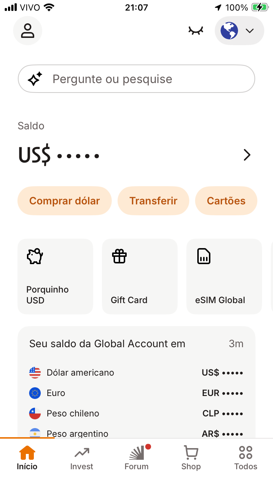
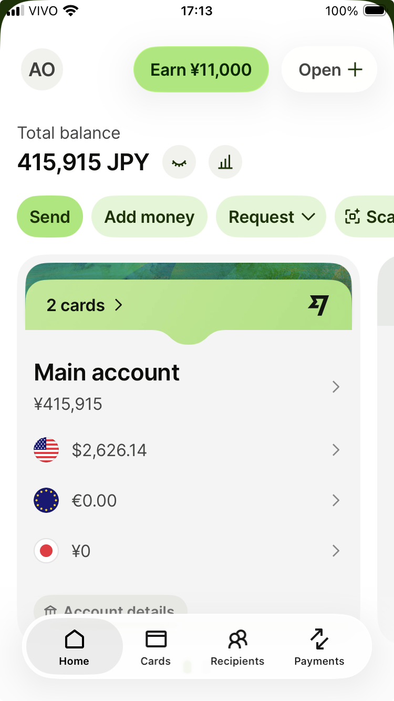

I had transferred USD 50 to my newly opened Banco Inter account via Wise. Wise said the transfer was complete. Inter's app also said it had arrived. But the balance ("Saldo") still showed nothing.
First, I asked the app's AI assistant. No luck — it said "Try tapping the black bar to reveal the amount," which no longer existed in the new UI. Then I was redirected to Chat Babi, the automated support bot. Still no answer. Eventually, I typed "atendente" and got a human agent. They checked and confirmed: "Yes, the funds are there. The balance is USD 50." Still, the app showed nothing visible. They escalated to a specialist team. The next day, an email confirmed the same thing: "Yes, your balance is 50 dollars."
Finally, I asked ChatGPT.
Answer, instantly: "That's a visibility toggle. Your balance is hidden. Tap the icon in the top right — it's supposed to be an eye, though it looks like a half-moon."
Problem solved.
What the screen actually looked like

The closed-eye icon was there. But it was sitting in the top navigation bar, far from the balance display. Nothing connected the two visually. No support agent thought to ask for a screenshot. No one described what the toggle looked like or where it was.
Compare: Wise gets it right

Wise uses the same icon — a closed eye meaning "hide this." But it places it directly next to the balance. The relationship is obvious. You see the number, you see the toggle, you understand what it does.
Same icon. Same concept. Completely different clarity.
What any support layer could have done
If any of the four support layers had asked: "Can you share a screenshot?" — it would have been solved immediately. Even without a screenshot, a support agent could have said: "Please check if there's a round icon at the top right of your screen. It looks like a closed eye or a semi-circle. Tap that — it's the visibility toggle."
They didn't. Because they didn't imagine what the user might be seeing — or not seeing.
The UX lessons
Place visibility toggles directly next to the data they control. Use standard icons — a closed eye is recognizable; a half-moon is not. If you must hide balances by default, make the unhide method obvious. And train support agents to describe UI elements clearly when screenshots aren't available.
Exploration-based design doesn't work for banking. Day 1 usability does.